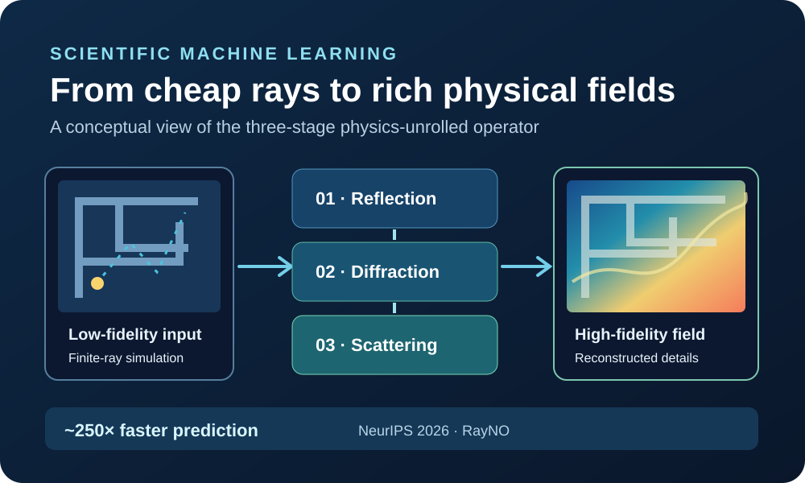

NeurIPS 2026 · Accepted
RayNO — Physics-unrolled neural operators
A scientific ML model that turns inexpensive ray-tracing outputs into high-fidelity wireless fields. Physics-aligned stages learn reflection, diffraction, and scattering; a denoising theorem explains learning from imperfect simulation labels.
~250× faster high-fidelity field prediction